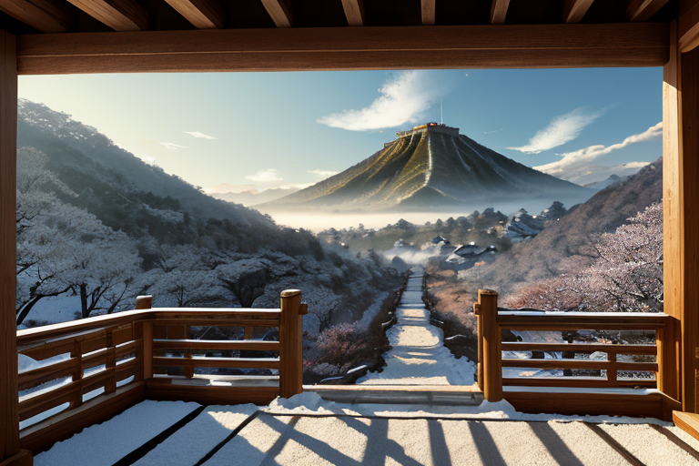
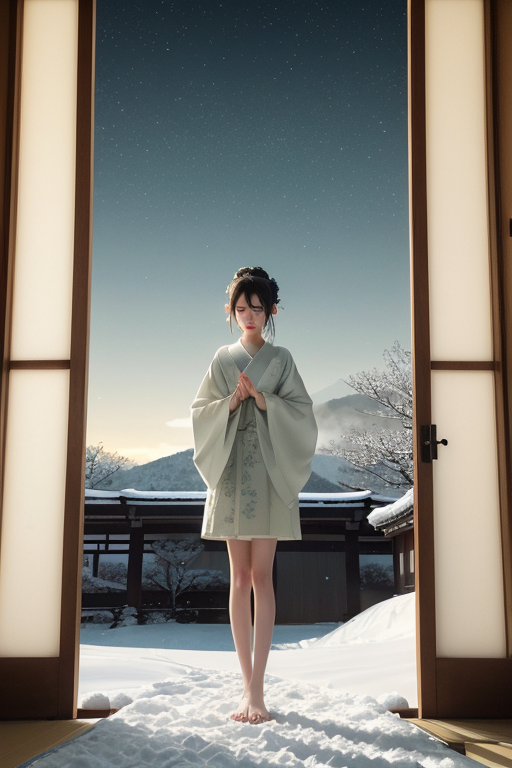
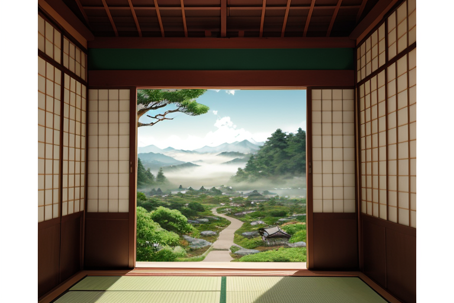
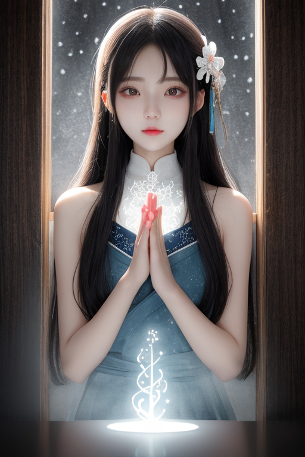
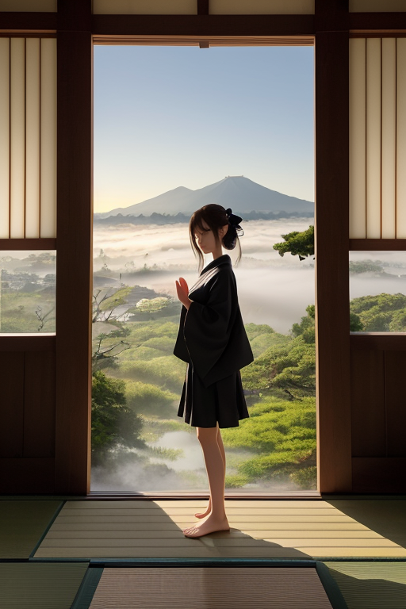

第一章 現実の岐阜
あなたはまだ気づいていない。この土地にも、王がいることを。
白川郷の合掌造りは、静かに雪を戴いていた。幾世代にもわたる人々の祈りが梁に染み込み、家屋自体がこの地に根ざした生きた均衡器のようだ。そのすぐ下を、大地の断層が潜んでいる。境目であること。それはこの土地の本質であり、宿命であった。飛騨と美濃、北と南、山と里。すべてがここで交差し、時に激しくせめぎ合う。関ケ原の古戦場に立つと、風が過去の鬨の声を運んでくるようで、今もなお、あの決定的な「境目」の緊張が地中に残留しているのを感じる。
岐阜城が金華山の頂に聳えるのは、まさにその象徴だ。織田信長が「天下布武」を掲げたこの城は、見えない力の均衡点に据えられた楔のようである。訪れる人々は、その歴史に思いを馳せ、眼下に広がる濃尾平野の穏やかさに安堵する。しかし、その平野の下では、複雑に絡み合う断層が、絶え間なく微細な調整を求め続けていた。

第二章 歪みの兆候
白川郷の合掌造り集落は、静かな雪に包まれていた。重厚な茅葺き屋根が幾何学的な均衡で支え合うその姿は、この土地の「調和」そのものを見せる。しかし、王ギフリア・バランスは、集落の中心に立ち、目を閉じていた。掌で感じるのは、人々の祈り——無事を願う日常の、ごく小さな願いの集合だ。それが今日、かすかに乱れている。観光客の増加による心のざわめきか、はたまた地中の微かな軋みの反映か。
主席妖精バラントが、無言で王の傍らに現れた。その手には、郡上八幡で漉かれたという和紙が一枚。そこには、目には見えない「境目」のエネルギーが、金と深緑の微光で波打つように描かれている。平穏な線の一部が、ほんのりと濁っていた。
「関ケ原の残留エネルギーが、東側の断層線を刺激しています」とバラントは報告する。感情を持たないはずの声に、ごく僅かな「懸念」の響きが混じる。王は頷き、高山の古い町並みへと視線を向けた。そこで営まれる日常——飛騨牛を焼く朴葉味噌の香り、鮎を扱う手際——それらを守るための、静かな戦略が今、必要とされていた。

第三章 王の葛藤
高山の古い町並みを、王は静かに見下ろしていた。格子戸の向こうで和紙に筆を走らせる職人の息遣い、軒先に干される朴葉味噌の微かな発酵の音。それらすべてが、複雑に絡み合う地中の「境目」の上で、かろうじて均衡を保って営まれている。
「感情は不要です」。かつて星から授けられた原理を、王は今、内側で繰り返す。関ケ原の残留エネルギーは、東西の断層を不安定に揺さぶる。それを数秒遅らせ、一段階緩和するのが己の役目だ。しかし、揺れが来る前に、この町並みの静謐を、ほんの少しでも長く保ちたい——その「願い」らしきものが、心の境目に滲み始めていた。
郡上八幡で夜毎続く踊りの輪。あの持続的なリズムは、地脈の軋みを和らげる調律でもあった。王は自らの内なる「境目」に立つ。感情なき調整者であるべき己と、この土地の持続を「望む」己。その狭間で、金と深緑の紋章が静かに脈打った。答えはまだない。ただ、次の微調整のために、王は深呼吸を一つ、深い静寂の中に解き放った。

第四章 妖精との対話
白川郷の合掌造り家屋の屋根裏。バラントは和紙のように薄く広がり、梁の微かな歪みを感知していた。「王よ。この家屋は、急勾配の屋根で雪の重みを『流す』。受け止めず、流す。それが持続の形です」
王は無言で聞く。感情の雪解け水が、内側をゆっくりと穿ち始めていた。
「我々の祈りは、『無事であれ』という願いそのものではありません」境界山の妖精ギフリスが、岩のように低い声で続けた。「『たとえ何かが起きても、この調和の記憶が、魂のよりどころとなりますように』。それが祈りです。境目に立つとは、どちらかに倒れることではなく、両方の重みを知り、その中心に軸を立てること」
飛騨牛を朴葉で焼く匂いが、静かな集落に立ち昇る。それは崩れゆくものと、持続するものの、絶妙な均衡の上に成り立つ香りだった。
王は己の内なる震えを見つめた。それは恐れではない。この土地の持続を「願う」という、確かな重み。境目に立つことの意味を、妖精たちは、この家屋のように、静かに教えていた。

第五章 微調整と余韻
王の内なる震えは、祈りへと昇華した。それは断層に沿う歪みの波を、精神の波長でなぞる行為である。彼は合掌造りの家屋が梁と柱で力を分散させるように、己を媒介とし、地中を走る巨大なエネルギーを微細な振動へと変換した。揺れは消えない。だが、屋根瓦のずれは一枚分減り、梁の軋みは半音低くなる。それは救済ではなく、調整。この土地が培ってきた「持続」の技そのものだった。
揺れが去り、深い静寂が戻った。白川郷の家々は、変わらぬ佇まいで夜霧に浮かぶ。妖精たちは言葉を交わさない。彼らの仕事は、境界線上の均衡を、次の瞬間へと静かに手渡すことだ。
王は岐阜城の天守から平野を見下ろす。関ケ原で東西の力が拮抗したように、崩壊と持続の力もまた、常に境目で均衡を探っている。彼はもう、無感情な調整者ではない。この土地の持続を願う者として、境目に立ち続ける。
郡上八幡で夜明けの鐘が鳴る。踊りは終わり、日常が始まる。全ては移ろい、全ては持続する。その微妙な均衡の上に、今日という日は静かに置かれていく。
あなたの町にも、王がいる。